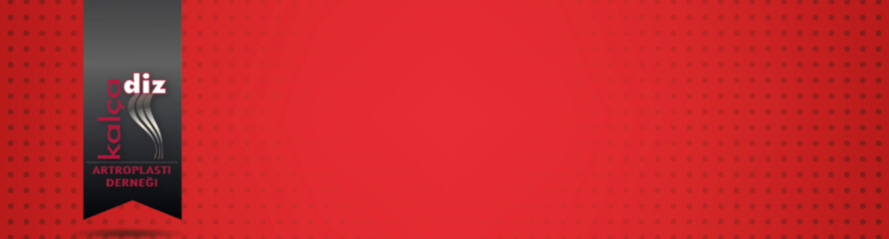

Saygıdeğer Meslektaşlarımız;
Derneğimiz tarafından düzenlenen pratik uygulamaya yönelik eğitim kursu çok olumlu eleştiriler almıştı. Bu yıl ilk kursumuz 16-19 Mart 2020 tarihlerinde Adana’da düzenlenecektir. Kursiyerler; belirtilen tarihlerde farklı eğiticiler ile beraber, üç farklı merkezde; preoperatif hastaları değerlendirme, radyolojik planlama ve ameliyatlara bizzat katılma fırsatı bulacaklardır. Konaklama masraflarının dernek olarak karşılanacağı kursumuzun, ulaşım giderleri kursiyerlerin kendilerine ait olacaktır.
Başvuruda bulunmak isteyenlerin kısa özgeçmişlerini ve ilgili evrakları https://etkinlik.citius.technology/kadadgezici2020adana adresinden göndermeleri gerekmektedir. Kurs programı, kursa katılacak kişilerin isimleri ile beraber duyurulacaktır. Başvuru koşulları aşağıda listelenmiştir. Saygılarımızla
Başvuru Koşulları:
- KADAD üyesi olmak
- Üyelik aidat borcu bulunmamak
- 5 yıl veya daha az süredir Ortopedi ve Travmatoloji Uzmanı olmak
- Üyelik şartı aranmadan son sene asistanları da; çalıştıkları merkezin Anabilim Dalı Başkanı veya Klinik Eğitim Sorumlusu’ nun onayı ile başvuru yapabilir
Prof.Dr.Bülent Atilla
Kalça Diz Artroplasti Derneği Başkanı
Doç.Dr. Turhan Özler
Kalça Diz Artroplasti Derneği Genel Sekreteri
Kurs Koordinatörü
